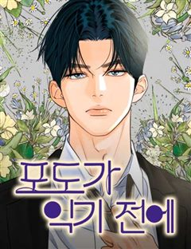
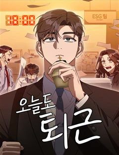

드라마 직장·돈·현실 웹툰 추천 TOP 30
드라마 작품 중에서 오피스, 재벌, 재벌남, 재벌녀 같은 요소가 들어간 작품만 골랐어요. 네이버웹툰·카카오웹툰·레진코믹스에서 조건에 맞는 작품 69개 중 인기 순으로 30개를 골랐어요. 인기 TOP 3: 더 복서, 지옥사원, 1초
2026-10-04 기준 · 성인 작품 제외
내 취향으로 더 좁혀서 추천받기 →-
1
 네이버웹툰
네이버웹툰더 복서
재능있는 복서를 찾던 전설적인 트레이너 K는 기묘한 소년을 발견한다. 그의 충격적인 재능은 과연 축복일까, 저주일까?!
드라마직업드라마몰아보기명작격투기네이버웹툰에서 보기 → -
2
 카카오웹툰
카카오웹툰지옥사원
인간의 음식에 매료된 악마 쿼터, 사고로 흙수저 인간에게 빙의하다?! 능력을 모두 잃고 인간 <고순무>의 몸에 갇힌 악마는, ‘낮은 등급’ 인간의 삶이 지옥에서의 삶보다 질이 떨어지자 ‘높은 등급’ 인간이 되기로 결심한다. 한 편, 국내 최고의 대기업 <선호 그룹>에선 학력과 경력을…
드라마오피스카카오웹툰에서 보기 → -
3
 네이버웹툰
네이버웹툰1초
구조율 100%의 전설적인 소방관. 그의 특별한 능력은 긴장하는 순간, 미래가 보인다는 것! 촌각을 다투는 진짜 소방관들의 이야기
드라마직업드라마눈물샘자극현대이능력네이버웹툰에서 보기 → -
4
 네이버웹툰
네이버웹툰백수세끼
백수 시절 내 곁을 지켜줬던 그녀... 돌아와 주면 안 되겠니? 음식 메뉴마다 담겨 있는 우리들의 연애 흑역사!
드라마오피스리얼로맨스공감캠퍼스네이버웹툰에서 보기 → -
5

-
6
 네이버웹툰
네이버웹툰상남자
오로지 성공만을 바라보며 기업 정점의 자리까지 오른, 최고의 샐러리맨 한유현. 대가로 사랑하던 모든 이를 잃어버린 후, 후회 섞인 인생을 돌아보는데... 어느 날 모든 기억을 안은 채, 젊은 시절의 그때로 돌아가게 된다. 모든 것의 시작점인 신입사원의 위치에서, 그가 다시 삶을 설계한…
드라마오피스직업드라마머니게임사이다네이버웹툰에서 보기 → -
7
 네이버웹툰
네이버웹툰재벌집 막내아들
[화제의 드라마 원작 웹툰!] 13년 동안의 수고를 배신으로 돌려받다니! 머슴처럼 살다 버려진 순양그룹의 실장, 윤현우. 모든 게 끝났다 싶었을 즘, 순양그룹 진 회장의 손주 진도준으로 깨어난다! 하지만 상속권과는 거리가 먼 재벌집 막내아들 진도준. 과연 그는 가족 정치극에서 최후의…
드라마오피스재벌정치고자극드라마네이버웹툰에서 보기 → -
8
 카카오웹툰
카카오웹툰블랙기업조선
밀리터리, 스팀펑크 등등 온갖 덕질에 미친 잡덕후가 환생했다. 그런데 아버지가 세종대왕? 덕질에 능한 군주와 덕질에 미친 아들, 그리고 갈려 나가는 대신들과 수많은 인간들. 오늘도 조선의 밤은 야근의 불빛이 가득하다.
드라마정치사이다카카오웹툰에서 보기 → -
9
 네이버웹툰
네이버웹툰A.I. 닥터
태화 그룹이 미래를 걸고 개발한 진단 목적 A.I. 바루다! 내과 레지던트 1년 차 이수혁은 바루다를 견학하던 중 원인 모를 폭발에 휘말려 정신을 잃고 만다. 그리고 다시 정신을 차렸을 때 그는 자신의 머릿속에 존재하는 A.I. 바루다를 마주한다. 이미 절대 떨어질 수 없는 사이가 되…
드라마직업드라마의학드라마사이다현대판타지네이버웹툰에서 보기 → -
10
 카카오웹툰
카카오웹툰학사검전
장원에 급제하여 입궁한 학사 운현. 황태자의 취미생활을 전담하는 초라하고 처량한 신세를 한탄하지만, 그럼에도 포기하지 않고 최선을 다해 무공을 익힌다. 그러던 운현은 갑자기 무림을 제패하기 위해 붓을 드는데?! 젊은 나이에 장원에 급제한 학사의 숨겨진 이야기가 시작된다.
드라마직업드라마미스터리액션카카오웹툰에서 보기 → -
11
 네이버웹툰
네이버웹툰운명을 보는 회사원
무당이 되어 세상을 어지럽힐 팔자를 타고난 아이. 욕심을 버리고 신을 받지 않기 위해 평범한 회사원이 되려 한다. 관상과 사주로 운명을 꿰뚫어 보는 최영훈. 과연 평범한 회사원이 될 수 있을까?
드라마오피스직업드라마현대판타지현대네이버웹툰에서 보기 → -
12
 네이버웹툰
네이버웹툰삼이는 재생한다
모든 게 완벽했던 인생에서 제발로 뛰쳐나와 극한의 가난한 생활을 하던 '오삼이'는 차가운 외모지만 마음만은 따뜻한 '김표준'과 그런 표준을 남몰래 좋아하는 '유찬'과 가까워지며 묘한 삼각관계로 뒤범벅된 학교생활을 하게 된다.
드라마재벌순애녀감성적인청춘네이버웹툰에서 보기 → -
13
 네이버웹툰
네이버웹툰중증외상센터 : 외과의사 백강혁
초감각을 지닌 남자, 백강혁. 아버지를 잃은 후로 사상 최고의 외상 외과 의사를 목표로 사정 없이 달리기 시작한다. 그런데 이제 광기를 곁들인…… 187cm의 모델 같은 외모로 병원을 휩쓸고 다니는 그는 외상 외과 의사가 되기 위해 온 몸으로 환자들을 마주하기 시작한다.
드라마직업드라마의학드라마현대성장물네이버웹툰에서 보기 → -
14
 네이버웹툰
네이버웹툰탑아이돌의 막내 멤버가 되었다
"25살…그거 아이돌은 못하는 나이잖아요." 유명 서바이벌 아이돌 오디션 '스타더스트 프로젝트'에서 탈락했던 도서한. 꿈에 미련은 못버리고 현실과 타협한 채 알바를 전전하는데…눈을 떠보니 8년 전으로 돌아왔다. 그것도 '스타더스트 프로젝트'를 시작하기 직전으로! 막내가 된 (영혼만은)…
드라마직업드라마연예계예술성장물네이버웹툰에서 보기 → -
15
 네이버웹툰
네이버웹툰스쿨 오브 스트릿
천재 댄서이지만 무대 공포증을 지닌 혜은과, 초보 댄서이지만 무대를 두려워하지 않는 수현. 서로 다른 두 댄서의 스트릿 댄스 성장기!
드라마예술소년물라이벌청춘네이버웹툰에서 보기 → -
16
 카카오웹툰
카카오웹툰세자, 죽이기
궁중 하녀 모제비는 동궁 침방의 나인, 남모란을 모시며 평온한 나날을 보내고 있었다. 그러던 어느 날, 남모란이 거처를 옮긴 뒤 행방이 묘연해진다. 불안한 마음에 모제비는 몰래 동궁에 숨어들어 모란의 행방을 묻고자 했으나, 그곳에서 뜻밖의 비밀을 엿보게 된다. 동궁에 감춰진 끔찍한 진…
드라마정치공감카카오웹툰에서 보기 → -
17

네이버웹툰포도가 익기 전에
어릴적 사건으로 수영의 집에 빚을 진 태은의 아버지는 매달 100만원을 수영의 집에 보낸다. 시간이 흘러 성인이 된 두사람은 새로 부임한 팀장과 팀의 막내로 만나게 되고 아슬아슬한 회사 생활을 이어간다.. “팀장님, 저한테 왜 잘해줘요?” “너한테 빚이 있어서.” “그럼 저 왜 미워하…
드라마오피스감성로맨스오피스로맨스네이버웹툰에서 보기 → -
18
 카카오웹툰
카카오웹툰닥터 플레이어
왕의 사생아, 레이몬드. 사람들의 멸시로부터 도망쳐 치료사가 되지만, 결과는 F급 낙제 치료사라는 낙인뿐. 그러던 어느 날, 그에게 기적이 찾아온다. [플레이어로 각성하였습니다!] [직업 : 외과의사(SSS급)] 이 세계에 존재하지 않는 의학 지식을 얻게 된 레이몬드. 최초의 외과의사…
드라마직업드라마힐링미스터리카카오웹툰에서 보기 → -
19
 네이버웹툰
네이버웹툰계속 써도 돈이 쌓임
청년 실업 100만 시대, 스펙 제로 백수 정진호. "너, 내 회사로 와라." 같은 게임의 길드 마스터였던 증권사 대표의 제안으로 얼떨결에 사회로 뛰어들게 된다! 그리고 그곳에서 발현된 정진호의 특별한 능력. 마우스 '딸깍' 한 번에 억 단위가 움직인다. 증권가의 돈을 싹쓸이하는 미친…
드라마오피스직업드라마자본주의주식네이버웹툰에서 보기 → -
20카카오웹툰
얼굴천재 0살 톱스타
하루만이라도 미남으로 살아보는 게 꿈이었던 조연배우 '이한조'는 선하게 살아온 삶에 대한 보상으로 아름다운 얼굴과 함께 소원을 들어주는 상태창과 환생한다. 비록 한겨울에 수녀원 앞에 버려진 천애고아 신세에 앞길이 막막하던 차에 재벌가 배우에게 입양되기까지 한, 운마저 너무 좋은 회귀…
드라마직업드라마카카오웹툰에서 보기 → -
21
 네이버웹툰
네이버웹툰어린이집 다니는 구나
"노는 게 제일 좋아!" 라고 했더니 정말 노는 게 직업이 됐다?! 매일 동심의 세계로 출퇴근한지 어쩌다 10년째! 아이들이라면 알 만큼 안다고 생각했는데... 예측불가한 말과 행동들은 여전히 새롭기만 하다. 그런 아이들에게 언제나 "그랬구나" 라고 말해주는, 10년차 프로공감러 구나…
드라마직업드라마컷툰공감무해한네이버웹툰에서 보기 → -
22
 네이버웹툰
네이버웹툰천재 무림 트레이너
대 역병 시대, 운영하던 헬스장이 망했다. 어떻게든 먹고 살아보려던 찰나 읽고 있던 무협지에 빙의했다. 도착해보니 천년 소림이라 좋아했는데, 이건 뭐? 다들 잘못된 지식과 운동법으로 몸이 다 망가져 있잖아?! 헬스 트레이너였던 내가 이걸 어떻게 참아! 현대의 지식과 운동법으로 사형들을…
드라마직업드라마동양가벼운무협/사극네이버웹툰에서 보기 → -
23
 네이버웹툰
네이버웹툰짜장 한 그릇에 제갈세가 데릴사위
짜장면 한 그릇으로 전 무림을 평정할 수 있을 것 같다? 최고의 중식 요리사를 꿈꿨지만 중국 송나라 시대로 보내져버린 주인공! 하지만 깨어난 몸에 무공은 전혀 없고, 남은 거라곤 전생에서 익힌 요리 기술들뿐. 그런데 이 요리들... 반응이 매우 좋다! 이번 생에는 과연 짜장면으로 중원…
드라마직업드라마하렘환생병맛네이버웹툰에서 보기 → -
24
 네이버웹툰
네이버웹툰영업 천재가 되었다
나는 빚을 갚기 위해 당장 할 수 있는 일을 선택했고, 그게 내겐 영업이었다. 그리고 내게 다시 한 번의 기회가 주어졌다.
드라마오피스직업드라마감성적인현대네이버웹툰에서 보기 → -
25
 네이버웹툰
네이버웹툰환생했더니 단종의 보모나인
조선의 비극적 왕 단종 곁으로 환생한 여인, 뜻밖에 그의 보모가 되어버린다. 역사의 비극을 바꿀 기회 앞에서 그녀는 어린 군주를 지키기 위해 권력의 소용돌이에 맞서게 되는데…
드라마직업드라마동양풍로맨스과거동양네이버웹툰에서 보기 → -
26
 네이버웹툰
네이버웹툰도무지 그애는
생계를 위해 아르바이트 전선에 뛰어들었으나 계속 거절만 당한 무지는 지푸라기라도 잡는 심정으로 오! 해피마트 시식 아르바이트를 시작한다. 낯선 환경에 주눅이 들지만, 거칠었던 그 곳의 첫인상이 조금씩 바뀌어 가는데.. 세상을 배워가는 수많은 '그 애'들의 이야기
드라마직업드라마공감청춘일상네이버웹툰에서 보기 → -
27
 네이버웹툰
네이버웹툰두 번 사는 프로듀서
“어, 미안. 근데 먼저 한 사람이 임자 아니야? 방송계가 원래 그런 거잖아.” 꿈을 가지고 패기 있게 방송국에 입사했지만, 쓰레기 같은 선배를 만나 10년 동안 모든 걸 빼앗기기만 한 준수. 뼈저리게 후회하고 이를 갈았지만, 바로잡을 수가 없었다. 절망에 잠겨 모든 걸 포기하려던 그…
드라마직업드라마연예계사이다인생역전네이버웹툰에서 보기 → -
28
 네이버웹툰
네이버웹툰재벌의 품격
1990년대 대한민국을 대표했던 재경 그룹 회장 손중길. 눈을 감고 30년 뒤, 2022년 손자 손정훈의 몸으로 눈을 뜬다. 30년 전과 비교해 눈에 띄게 쇠퇴한 재경 그룹. 손중길은 자신이 일궈 낸 그룹을 다시금 정상에 올리려 한다.
드라마오피스재벌직업드라마사이다네이버웹툰에서 보기 → -
29
 네이버웹툰
네이버웹툰보이스피싱인데 인생역전
"당신에게 미래를 팝니다!" 5년 전 조직적인 음해로 한 순간에 몰락한 국민배우 강주혁. 고통스럽게 지내던 그에게 어느날 의문의 전화 한 통이 걸려온다. 바로 미래를 예언해 주는 보이스피싱! 연예계 재기와 복수를 위한 위험한 거래가 시작된다.
드라마연예계인생역전참교육하이퍼리얼리즘네이버웹툰에서 보기 → -
30

네이버웹툰오늘도 퇴근
한국 굴지의 대기업 소야그룹 ESG팀의 팀장 이민수. 그는 오늘도 칼퇴근을 목표로 묵묵히 일을 한다. 어느 날, 회장의 막내딸 강채은이 팀원으로 들어오게 되면서 회사 정치에 엮여 사내 빌런들과 부딪치며 다양한 사건을 겪게 되는데… 이민수는 과연 칼퇴근을 할 수 있을까?
드라마오피스현대소설원작네이버웹툰에서 보기 →